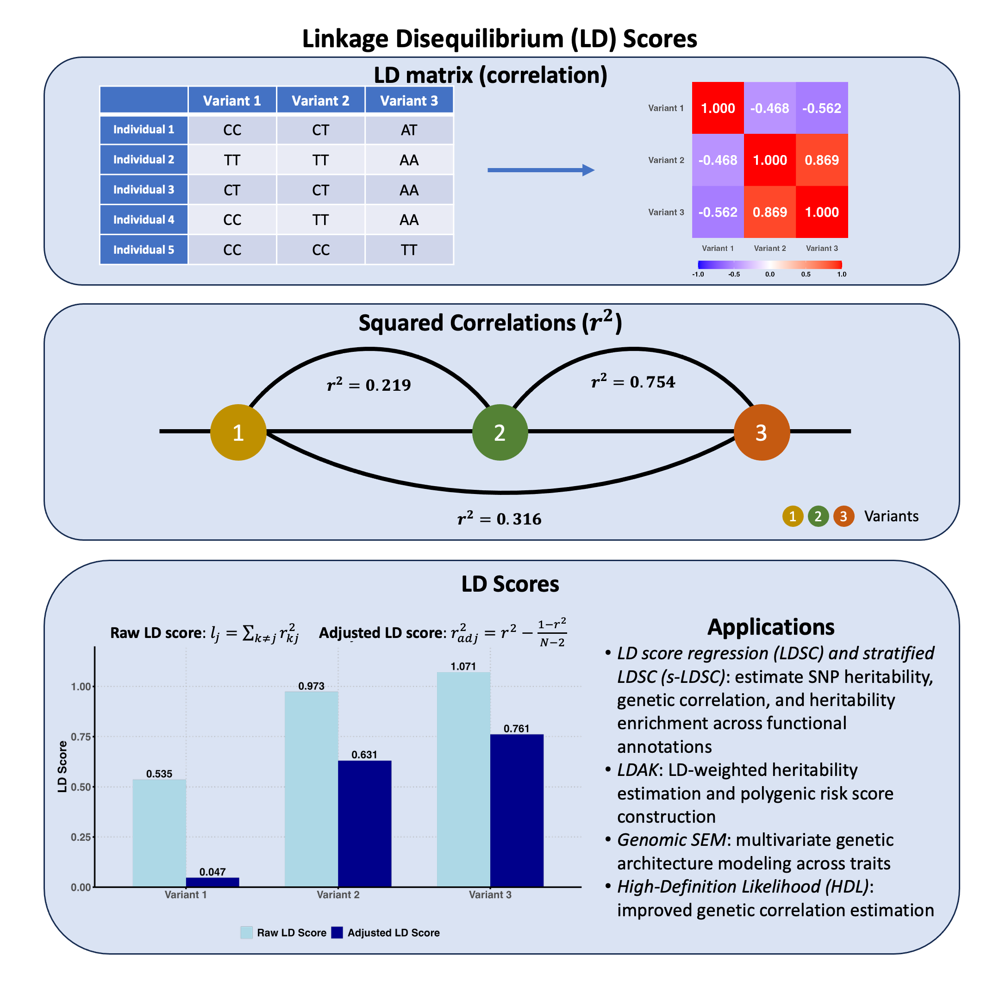

Linkage Disequilibrium Score#
The LD score of a variant is a measure to describe how connected or tagged this variant is with other variants by summing up the squared correlation (r²) with every other variant under consideration.
Graphical Summary#

Key Formula#
The LD score for a SNP is the sum of squared correlation \(r^2\) measured with all other SNPs:
Technical Details#
Definition and Calculation#
The LD score for the \(j\)-th variant is defined as the sum of the squared correlation coefficients \(r^2\) between that variant and all other variants in the genome, typically within a specified genomic window or region:
However, this is not an unbiased estimate. We can correct for the bias like this:
Interpretation: High LD Score and GWAS Signals#
What does a high LD score mean for GWAS results? When a variant has high LD, any causal effect in the region gets “shared” across all correlated variants. If there’s a true causal variant nearby, the marginal association signal will spread to all variants in LD with it.
Therefore, variants with higher LD scores are more likely to show inflated marginal association statistics (larger |Z-scores|) even if they’re not causal themselves. This is why LD score is useful for distinguishing true signals from LD-induced signals and for heritability estimation.
Key insight: LD score predicts how much a variant’s marginal effect will be inflated by linkage to other causal variants.
Effective number of SNPs#
When there is LD between SNPs, it is useful to have a quantity that describes how many independent SNPs there are. This is the effective number of SNPs, markers or chromosome segments (\(M_e\)), and can be defined as
where \(\bar{\boldsymbol{l}}\) denotes the mean LD score across all SNPs.
Example#
We’ve seen how genetic variants can be correlated with each other in Lecture: linkage disequilibrium, but how do we summarize the overall “connectedness” of each variant to all others? In statistical genetics, this is captured by the LD score - a single number that tells us how much linkage disequilibrium a variant has with all other variants in the region.
But there’s a catch: with small sample sizes, the sample correlation is a biased estimator, meaning even unrelated variants can show non-zero correlations just due to sampling noise. How do we adjust for this bias, and what do LD scores look like before and after this adjustment?
# Clear the environment
rm(list = ls())
# Define genotypes for 5 individuals at 3 variants
# These represent actual alleles at each position
# For example, Individual 1 has genotypes: CC, CT, AT
genotypes <- c(
"CC", "CT", "AT", # Individual 1
"TT", "TT", "AA", # Individual 2
"CT", "CT", "AA", # Individual 3
"CC", "TT", "AA", # Individual 4
"CC", "CC", "TT" # Individual 5
)
# Reshape into a matrix
N = 5
M = 3
geno_matrix <- matrix(genotypes, nrow = N, ncol = M, byrow = TRUE)
rownames(geno_matrix) <- paste("Individual", 1:N)
colnames(geno_matrix) <- paste("Variant", 1:M)
alt_alleles <- c("T", "C", "T")
# Convert to raw genotype matrix using the additive / dominant / recessive model
Xraw_additive <- matrix(0, nrow = N, ncol = M) # dount number of non-reference alleles
rownames(Xraw_additive) <- rownames(geno_matrix)
colnames(Xraw_additive) <- colnames(geno_matrix)
for (i in 1:N) {
for (j in 1:M) {
alleles <- strsplit(geno_matrix[i,j], "")[[1]]
Xraw_additive[i,j] <- sum(alleles == alt_alleles[j])
}
}
X <- scale(Xraw_additive, center = TRUE, scale = TRUE)
# calculate the LD
R = cor(X)
The LD matrix is:
R
| Variant 1 | Variant 2 | Variant 3 | |
|---|---|---|---|
| Variant 1 | 1.0000000 | -0.4677072 | -0.562500 |
| Variant 2 | -0.4677072 | 1.0000000 | 0.868599 |
| Variant 3 | -0.5625000 | 0.8685990 | 1.000000 |
To calculate raw LD scores:
Sum squared correlations across each column
Subtract the diagonal (variant’s correlation with itself)
This gives the total genetic connectivity for each variant.
R_sq = R^2
ld_scores_raw <- colSums(R_sq) - diag(R_sq)
The original LD scores are:
t(ld_scores_raw)
| Variant 1 | Variant 2 | Variant 3 |
|---|---|---|
| 0.5351562 | 0.9732143 | 1.070871 |
We then adjust the LD scores:
R_squared_adj_mat = R_sq
# Apply the adjustment formula to each non-diagonal element
for (i in 1:M) {
for (j in 1:M) {
# Apply the adjustment formula: r2_adj = r2 - (1-r2)/(N-2)
R_squared_adj_mat[i, j] <- R_sq[i, j] - (1 - R_sq[i, j]) / (N - 2)
}
}
ld_scores_adjusted <- colSums(R_squared_adj_mat) - diag(R_squared_adj_mat)
The adjusted LD scores are:
t(ld_scores_adjusted)
| Variant 1 | Variant 2 | Variant 3 |
|---|---|---|
| 0.046875 | 0.6309524 | 0.7611607 |
Supplementary#
Graphical Summary#
library(ggplot2)
library(reshape2)
# Set plot dimensions
options(repr.plot.width = 10, repr.plot.height = 6)
# Create a data frame with both raw and adjusted LD scores
ld_data <- data.frame(
Variant = paste("Variant", 1:3),
Raw_LD_Score = ld_scores_raw,
Adjusted_LD_Score = ld_scores_adjusted
)
# Reshape data for ggplot
ld_long <- melt(ld_data, id.vars = "Variant",
variable.name = "Score_Type", value.name = "LD_Score")
# Create the plot
p <- ggplot(ld_long, aes(x = Variant, y = LD_Score, fill = Score_Type)) +
geom_bar(stat = "identity", position = "dodge", width = 0.7) +
geom_text(aes(label = sprintf("%.3f", LD_Score)),
position = position_dodge(width = 0.7),
vjust = -0.3, size = 5, fontface = "bold") +
scale_fill_manual(values = c("Raw_LD_Score" = "lightblue",
"Adjusted_LD_Score" = "darkblue"),
labels = c("Raw LD Score", "Adjusted LD Score")) +
scale_y_continuous(limits = c(0, 1.2), breaks = c(0,0.25, 0.5, 0.75, 1), expand = c(0, 0)) +
labs(title = "LD Scores by Variant",
x = "", # Remove x-axis title
y = "LD Score",
fill = "") +
theme_minimal() +
theme(
text = element_text(size = 14, face = "bold"),
plot.title = element_text(size = 18, face = "bold", hjust = 0.5),
axis.text = element_text(size = 14, face = "bold"),
axis.title = element_text(size = 16, face = "bold"),
legend.text = element_text(size = 14, face = "bold"),
legend.position = "bottom", # Position legend at the bottom
panel.grid.major = element_line(color = "gray", linetype = "dotted"),
panel.grid.minor = element_blank(),
axis.line = element_line(linewidth = 1),
axis.ticks = element_line(size = 1),
# Add transparent backgrounds
panel.background = element_rect(fill = "transparent", color = NA),
plot.background = element_rect(fill = "transparent", color = NA)
)
# Display the plot
print(p)
# Save with transparent background
ggsave("./cartoons/linkage_disequilibrium_scores.png", plot = p,
width = 10, height = 6,
bg = "transparent",
dpi = 300)
Warning message:
"The `size` argument of `element_line()` is deprecated as of ggplot2 3.4.0.
i Please use the `linewidth` argument instead."